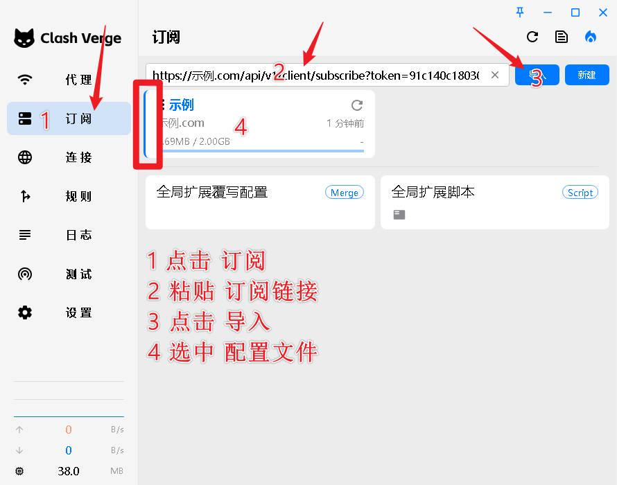

使用文档
windows教程
clashvergerev 简单教程
建议卸载
杀毒软件:360 火绒 qq管家 金山毒霸 等等一系列杀毒管家软件...
必须关闭
加速器软件: 雷神 UU...等等一系列VPN加速器软件
需要先购买套餐才能成功导入 购买套餐后 这里会显示下载链接
下载地址
Windows10/11
64位
https://app.chongjin01.icu/Windows/Clash_Verge_REV/ClashVerge_x64.exe
32位
https://app.chongjin01.icu/Windows/Clash_Verge_REV/Clash.Verge_x32.exe
ARM
https://app.chongjin01.icu/Windows/Clash_Verge_REV/ClashVerge_arm.exe
Windows7/8
64位
https://app.chongjin01.icu/Windows/Clash_Verge_REV/Webview2/Clash.Verge_win7_x64_fixed_webview2-setup.exe
32位
https://app.chongjin01.icu/Windows/Clash_Verge_REV/Webview2/Clash.Verge_win7_x64_fixed_webview2-setup.exe
第1步 点这里复制订阅地址
第2步 点击 订阅 将 订阅地址 粘贴到 输入框 点击 导入

第3步 点击设置 勾选 系统代理
完毕
如果无法使用
必须完全按照步骤顺序操作 不要先勾 系统代理 会导致上不了网 和无法导入
1 核对时间 https://time.is 误差不允许超过10秒
2 浏览器不允许安装加速代理类插件扩展
3 百度搜 拨号上网 代理 知乎
4 百度搜 关闭IPV6